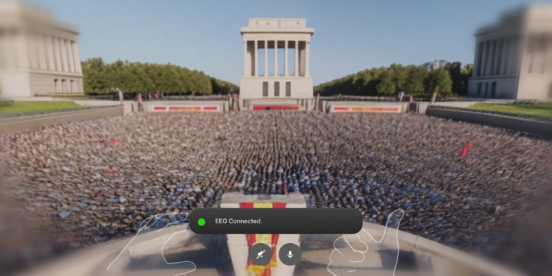
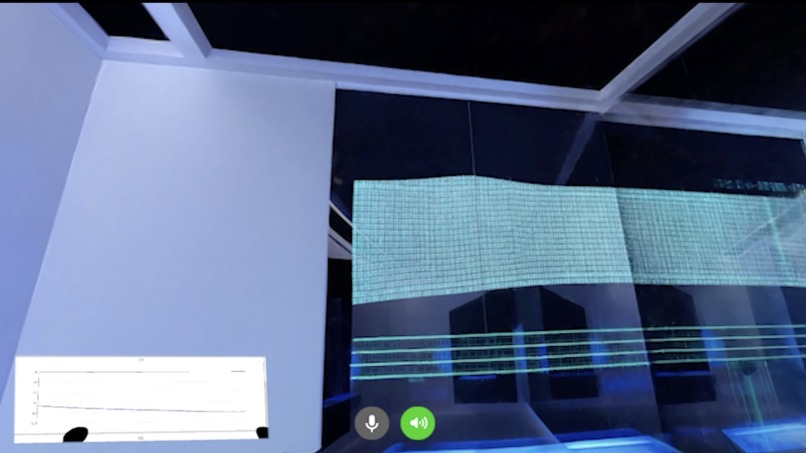
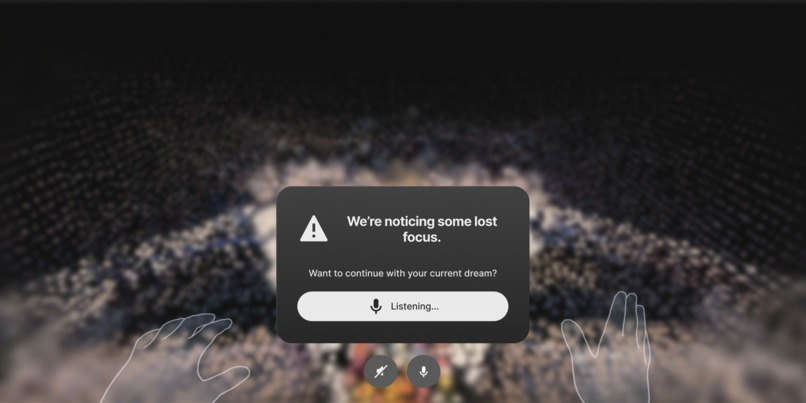

VR Experience — Self-Discovery & BCI
Dream.ee
A VR platform that generates adaptive worlds based on real-time EEG engagement signals — helping users discover what genuinely resonates with them through exploration, not instruction.
Most self-discovery tools tell you what to do: take this quiz, answer these prompts, follow this framework. Dream.ee takes the opposite approach — give people freedom, watch what they do with it, and let genuine behavior reveal what language never could.
Rooted in the concept of Ikigai, Dream.ee is a VR platform running on Meta Quest 3 that places users inside AI-generated worlds with no instructions and no goals. As they explore, the system reads their EEG engagement signals in real time via a BrainBit brain-computer interface. When interest begins to drop, a background agent quietly surfaces a prompt for the next world — one shaped by everything the system has observed so far.
VR Interface & Immersion Design
I built the immersive VR interface in Unity, designing the environments and interaction flows that support the self-reflection workflow. The central challenge was maintaining presence throughout: world transitions had to feel seamless, never pulling users out of the experience to remind them they're inside a system.
I designed the transition UX specifically around non-intrusion — when the boredom detector fires and a new world is ready, the handoff is handled through careful preloading, object lifecycle management, and timing so that the swap feels like a natural shift in space rather than a loading screen. The EEG setup UI and voice-prompt interface were also designed to fade into the background, keeping the user's attention on the world itself.
EEG Integration
Integrating the BrainBit SDK into the real-time interaction pipeline was one of the more technically involved parts of my contribution. The hardware itself presented an unexpected challenge — the device was labelled Brain Bit 1 but required the Brain Bit 2 SDK, with an entirely different set of backend functions for sensing, connecting, and streaming data. Working through that undocumented discrepancy was a significant portion of the integration work.
Once connected, EEG signals feed into a lightweight in-memory analytics service that scores engagement based on dwell time, interaction frequency, and attention proxies derived from the brain data. The result is a feedback loop where the user's own neurology shapes what they experience next.


